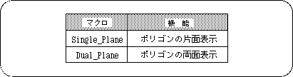
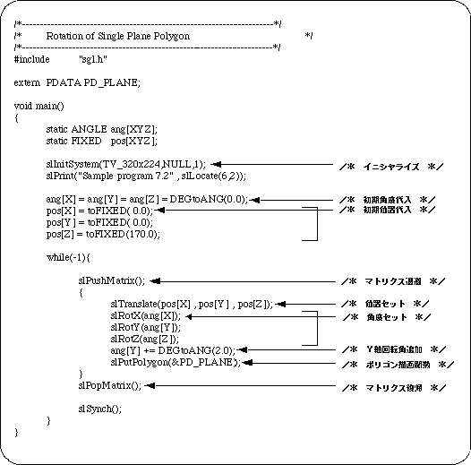
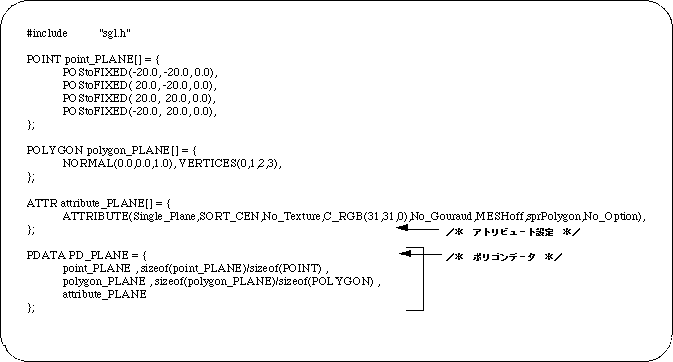

Return to previous page | Return to menu | Go to next page
The first parameter “Plane” of the attribute indicates the polygon's front and back attributes.
The front / back attribute is an attribute that indicates whether the polygon is a single-sided polygon or a double-sided polygon.
Double-sided polygons can be seen from both front and back, but single-sided polygons disappear when they are turned around.
The following are the macros that can be specified for this parameter.

Let's take a look at the sample program (Listing 7-2).
A single-sided yellow polygon rotates around the Y axis.
Because it is a single-sided polygon, the back side is not displayed.

Look at line 27. The polygon drawing routine “slPutPolygon” is called and a pointer to the polygon data “PD_PLANE” is passed.
“PD_PLANE” is defined in the source “polygon.c” as follows:

The 18th and subsequent lines are polygon data. Line 21 is a pointer to the attribute data, so the actual data is from line 14.
You can see that the first parameter is “Single_Plane”.